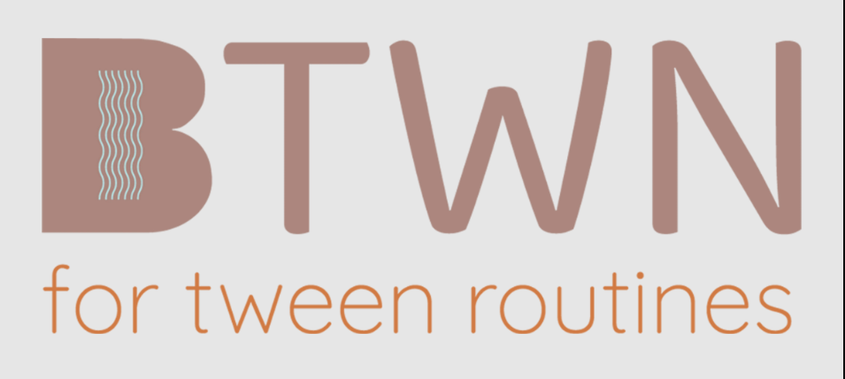
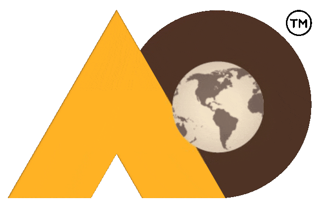

Professional services who want to become thought leaders
Professional services thrive when they showcase their thought leadership before potential clients and industry influencers. In a world where most potential customers do significant research before reaching out for a call, trust needs to be built before a single message has been exchanged.
But even the best companies find it difficult to convert their experience and expertise to reach, which is where we come in. As a professional service ourselves, we know the kind of connections that need to be built that move the needle for such orgs.
We tap into the expertise, the capabilities and the success stories of professional service companies to create thought leadership that demands attention and opens conversations. No shortcuts or noise. Just pure visibility in front of the right audience.
Our professional service customers focus on what they are the best at, while we ensure their expertise gets the attention it deserves.





Growth-focused brands in it for the long haul
The pull toward paid media is real and understandable. It moves fast, it shows results, and when the pressure to grow is constant, fast feels like the only option. But the brands that sustain real, compounding growth eventually arrive at the same conclusion: media spend without brand is a treadmill.
We work with growth-focused brands that have made peace with that truth. Founders and teams who know that doubling down on brand is not the slow option, it's the smart one. And who want a partner that matches that ambition with something most agencies won't offer: hard numbers, committed deliverables, and full accountability for outcomes.
On the execution side, we also step in where in-house teams hit their ceiling. We absorb that load without friction. No ramp-up theatre, no hand-holding, just a team that gets in and gets to work.
Government enterprises looking for real engagement from citizens
Government enterprises are like completely unique biomes. The briefs are more complex, the stakeholder landscape is wider, and the guidelines that shape the work are non-negotiable. Most agencies find that constraining. We've learned to find the creativity inside it.
For fifteen years, we've been partnering with government organisations like Singapore Science Centre and SGInnovate, and that experience has taught us something important. In the public sector, success is measured on whether real people actually showed up, clicked through, signed on, and engaged.
Within whatever framework a government organisation works inside, we find the room to create work that catches attention and moves people to act. Eye-catching without being reckless. Innovative within the brief. Always built around the question that matters most in this space: did the audience respond?


CMOs with team gaps between marketing and sales
In most organisations, marketing and sales tend to work in silos. Marketing builds the pipeline. Sales works it. And it works. Somewhat. But it leaves a huge gap in the middle where leads go cold, messaging gets inconsistent, and attribution becomes a guessing game.
CMOs feel this more acutely than anyone. Even when the strategy is sound and the team is firing on all cylinders, weak connective tissue between marketing and sales ruins campaigns. That gap is rarely about effort. It's about expertise that sits across both worlds simultaneously.
That's exactly where we come in. We've spent years working at the intersection of marketing and sales operations. We don't take sides because we know there are none. It's a single unified engine, and all it needs is a bridge to make it purr.
Let's prepare the soil
Every engagement begins with a no-catch strategy call. No decks, no pitches, no strings attached. Just a real, honest, hard look at where the business is, and where we can take it.
Contact arrow_forward